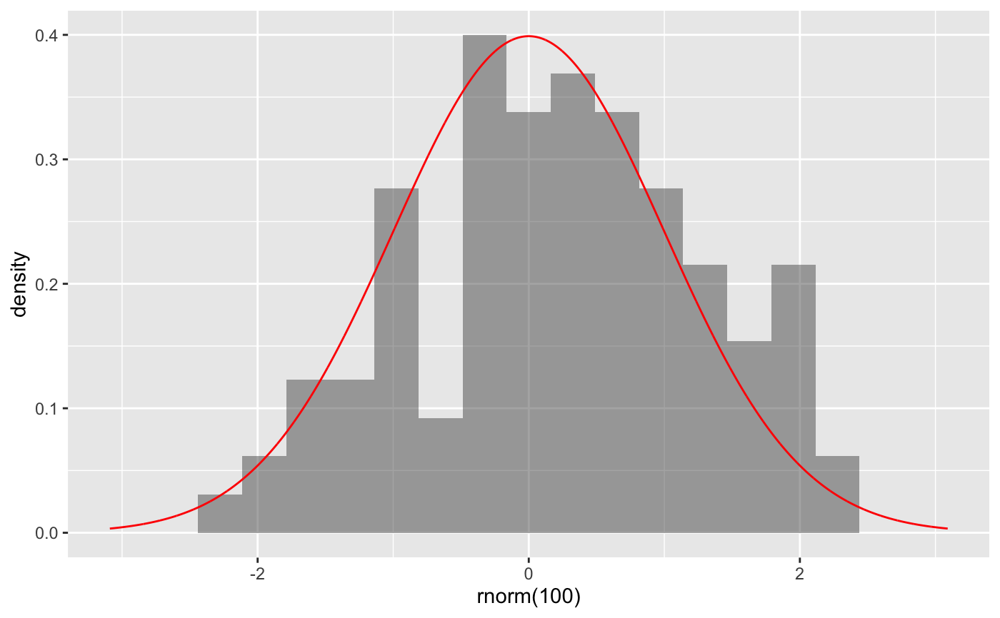
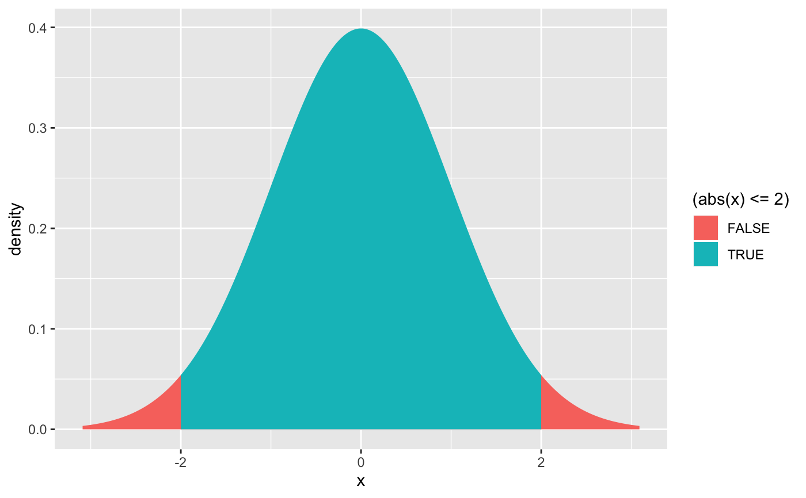
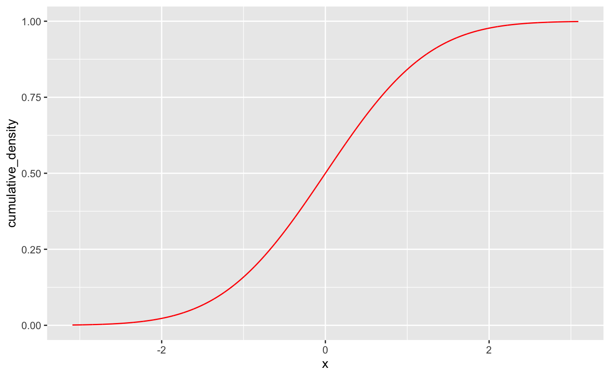
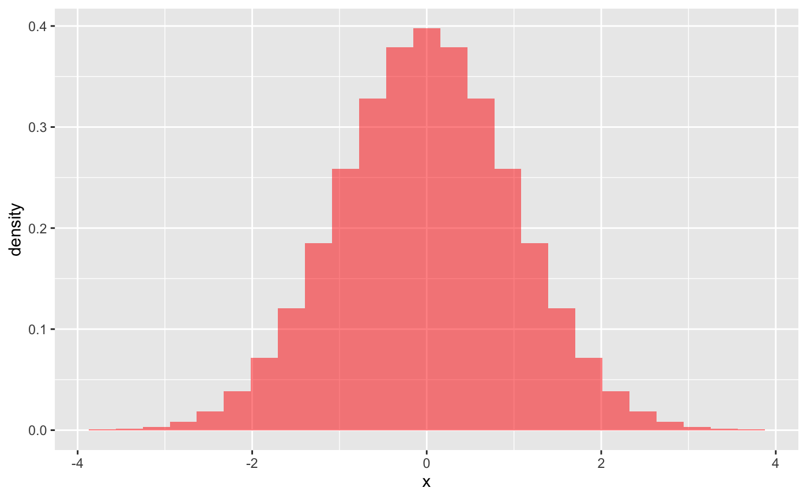
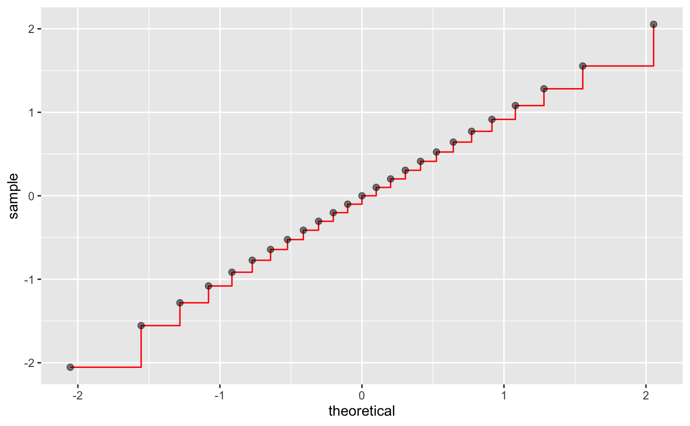
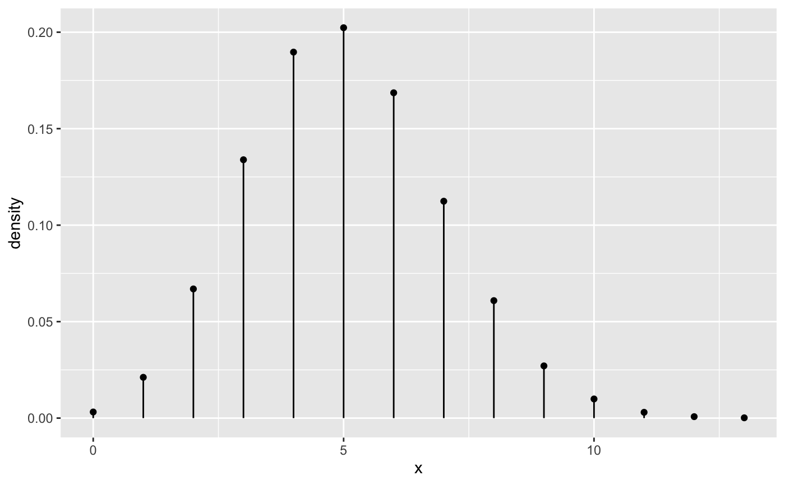
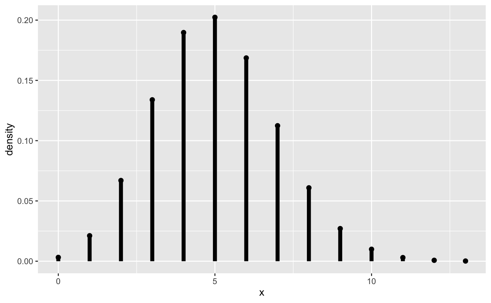

Create a layer displaying a probability distribution.
gf_dist(object = ggplot(), dist, ..., xlim = NULL, kind = c("density", "cdf", "qq", "qqstep", "histogram"), resolution = 5000L, params = NULL)
Arguments
| object | a gg object. |
|---|---|
| dist | A character string providing the name of a distribution. Any
distribution for which the functions with names formed by prepending
"d", "p", or "q" to |
| ... | additional arguments passed both to the distribution functions and
to the layer. Note: Possible ambiguities using |
| xlim | A numeric vector of length 2 providing lower and upper bounds for the portion of the distribution that will be displayed. The default is to attempt to determine reasonable bounds using quantiles of the distribution. |
| kind | One of |
| resolution | An integer specifying the number of points to use for creating the plot. |
| params | a list of parameters for the distribution. |
Examples
gf_dist("norm", color = "red", kind = "cdf")gf_dist("norm", fill = "red", kind = "histogram")gf_dist("norm", color = "red", kind = "qqstep", resolution = 25) %>% gf_dist("norm", color = "black", kind = "qq", resolution = 25, size = 2, alpha = 0.5)# size is used as parameter for binomial distribution gf_dist("binom", size = 20, prob = 0.25)# If we want to adjust size argument for plots, we have two choices: gf_dist("binom", size = 20, prob = 0.25, plot_size = 2)